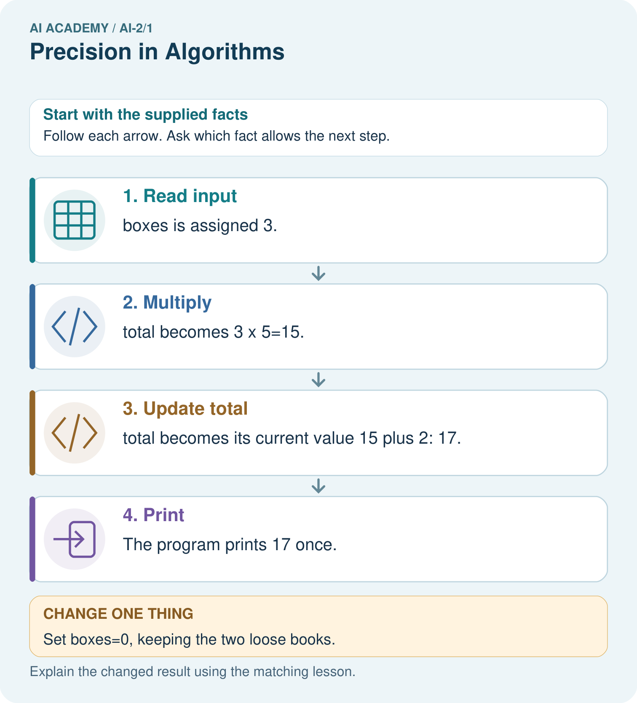

AI Academy · Level 2 · Grade 7 · Week 1 · Teacher guide
Precision in Algorithms
Learn to understand, design, build, test and explain AI systems responsibly.
Project: Transparent Book Recommender
Teacher guide · 1 of 6
Precision in Algorithms
Teach the learning cycle
Primary target: Translate a short paper calculation into a Python script
| Session | Sequence and minutes | Resources |
|---|---|---|
| Session 1 · Understand · 45 min | 0–7: recall and prerequisite; 7–15: inspect the concrete case and predict; 15–30: teacher models the worked trace; 30–40: learners explain a step using the text and visual; 40–45: check the core idea. | Sections 1–6; record the brief recall in the workbook. |
| Session 2 · Practise · 45 min | 0–5: retrieve the procedure; 5–15: W2 completion practice; 15–23: explain and check with a partner; 23–30: each learner answers the misconception check; 30–40: targeted reteaching or a harder variation; 40–45: prepare the investigation. | Sections 7–10; use the matching workbook W2 and misconception check. |
| Session 3 · Investigate and transfer · 45 min | 0–5: retrieve the decision rule; 5–20: investigate or trace; 20–30: start the independent case; 30–38: connect the project; 38–43: act on feedback; 43–45: plan the return check. | Sections 9 and 11–14. Give extra time to finish the full task set; use Section 15 when the week includes a coding lab. |
This is a starting allocation of 135 minutes, not a validated duration. Preserve all named topics. Schedule extra time for connected examples, the full investigation, independent cases and project building. Repeated copies of a case share one recorded attempt; they are not new evidence.
Case exposure check: this source example appears in ai-2/1, ai-3/23, python-bridge/1. Reuse a familiar case for recall or modelling; verify that the case used to assess transfer has not already received feedback.
Retrieval answer guidance
Expo and Defense
Without opening the old lesson, explain one key idea from Expo and Defense. Give an example and a mistake that the idea helps you avoid.
Look for: Evaluate a saved candidate and a manual baseline fairly
Reference example, not the only acceptable wording: Require an identifiable saved version, complete instructions, valid whole minutes 0 to 30, Yes or No quiet input, inclusive time AND quiet compatibility, first-fit order, reset, stopping and clarification. The baseline checks all rows and selects the first fit under the same contract. Accept honestly stated known failures; do not award a stronger result for hiding them.
Use the student module and workbook section with this exact week title. The worked case, independent question and answers below form one aligned lesson sequence.
What the learner must demonstrate
Write an algorithm for borrowing a classroom book when the book may already be on loan. Include inputs, a no-copy-available outcome and a check that prevents two borrowers receiving the same copy.
Concept to explain
Computers follow stated steps, not intended meaning.
| Term | Meaning |
|---|---|
| algorithm | A specified sequence of steps for performing a task or solving a class of problems. |
| precise | Specific enough that a reader can distinguish the intended meaning or reproduce the action. |
| assumption | Something treated as true for reasoning that has not been established by the supplied evidence. |
| test case | A specified input and conditions with an expected result or measurement rule. |
Prepare the class
Use the supplied scenario, student illustrations and blank paper. For numeric work, offer counters or a calculator after learners show the setup. Fictional records are supplied; personal data and paid accounts are unnecessary.
Allow 80 minutes: recall 8; explanation 12; worked demonstration 15; guided practice 20; independent assessment 15; project and reflection 10. Extend the lab into a second session when needed.
Preparation for the connected explanation
This is a first encounter with saved Python scripts, not a compressed implementation of the Grade 6 adviser. Teach assignment, multiplication and print only as needed; values and types follow in Week 2. Use a fresh run to avoid hidden interactive state. Reference: Python tutorial, An Informal Introduction to Python, https://docs.python.org/3/tutorial/introduction.html (assignment, arithmetic and print).
Readiness answer
Record four and six, multiply them to get 24, then display 24. The order must make the required values available before use.
Teacher-prepared Python 3 editor with a new saved .py file and a visible output area; test Run before class
Paper counters or equal-group sketches and a blank expected/observed record
The printed script and workbook; no logins or personal data required
End goal for the pictorial case
By the end, I can translate an ordered algorithm into Python and check state after each line.
This added worked case illustrates the week’s main idea. Retain all original and connected topics; schedule its practice within the teaching cycle.
Teacher guide · 2 of 6
Explain the mechanism
Explain the mechanism
Input → Process → Output
Trace the information. At each stage, ask what changed and how you could test it.
Which stage could fail even when the other two are correct? Explain:
Predict first. Then check each step. A correct answer without visible reasoning is incomplete evidence.
1. Vague: ‘Add the filling.’
2. Question: Which filling? How much? Where?
3. Precise: place 2 cucumber slices on the center of bread A.
4. Test with a new partner: identical results are evidence of precision.
Recalculate, retrace, or restate the reasoning in your own representation:
CHECK Did the evidence answer the exact question? Did the total, path, or source record stay consistent?
Concrete teaching case
A sandwich algorithm says add spread, close it, cut it, without stating materials or directions.
Expose assumptions and write a precise paper simulation.
Exact explanation to model
Use two paper bread squares, mark a spoon-sized spread area on one, place the second on top and draw a diagonal cut. State materials and order. No real food or sharp tools are needed.
Explain the added worked example
In Grade 6 you traced rules on paper. Now you will write a small Python program and check what it actually does. Begin with a counter-packing calculation, not the whole activity adviser. The requirement is to find the total counters in equal packs and display that total. For this first program, the supplied quantities are whole, nonnegative numbers; it does not yet validate typed input.
Use a teacher-prepared Python 3 editor that can run a saved .py file. Open a new file called counters.py, type the code exactly as shown in the next section, save it, and use the editor’s Run command. Read the output area separately from the source editor. No account, AI tool, package installation or personal data is needed. If a device is unavailable, trace on paper and label the result predicted rather than executed.
Read the script from top to bottom. The equals sign assigns the value on its right to the name on its left. The star means multiplication. print(total) displays the value of total; it does not display the letters in the name. Type ordinary straight characters and keep the parentheses. The Python prompt symbols >>> are not part of this saved script.
Key terms
| Term | Meaning |
|---|---|
| Algorithm | An ordered procedure for solving a stated problem |
| Program | Instructions written in a language a computer can execute |
| Interpreter | Software that executes Python instructions |
| Assignment | Binding a name to the value of an expression |
| Output | Information a program displays or returns |
Model the reasoning aloud
Use the complete worked example below before asking learners to complete W2. Reveal a small part, invite a prediction, then explain the deciding step. These teacher notes contain solutions; do not reveal the independent case answer during modelling.
| packs = 4 | packs is 4 | Nothing yet |
|---|---|---|
| per_pack = 6 | packs is 4; per_pack is 6 | Nothing yet |
| total = packs * per_pack | total is 24 | Nothing yet |
| print(total) | Values are unchanged | 24 |
Write 24 as the expected output before running. Then copy the actual output into a separate column. A matching result supports this case, not every possible input. A saved file may contain an old edit: save again and rerun the whole script. Do not type the expected number into the output record without running.
| Thinking move | Teacher prompt |
|---|---|
| Plan | What is given? What is the question? Which procedure fits these facts? |
| Do | Point to each input and intermediate step in the worked trace. Name the rule that allows the next step. |
| Check | Does the output answer the question? Which assumption or limitation prevents a larger claim? |
Use the diagram and verbal explanation together. Ask learners to match a sentence to a specific visual step; do not assign learners fixed visual or auditory learning styles.
A pictorial worked case: Precision in Algorithms
A fictional book-box counter has three boxes with five books each and two loose books.
The facts we will use
Python instructions: boxes=3; total=boxes*5; total=total+2; print(total).
Run the instructions in this order with ordinary integer arithmetic.

Read the picture one step at a time
Why this result follows
Assignment replaces a variable’s stored value. In total=total+2, Python first reads the current total on the right, calculates 17, then assigns that result to total on the left. The equal sign is an instruction here, not a claim that 15 and 17 are mathematically equal. Predict output before running.
What this example does not establish
These statements count supplied books; they do not validate input types or infer stock from measurements.
Change one thing in the pictured case
Change: Set boxes=0, keeping the two loose books.
Prediction: The printed result is 2.
Reason: 0×5+2=2; there is no rule saying zero boxes means zero loose books.
Ask while showing the picture
Cover the result. Ask learners to name the inputs and predict the next step. Uncover one step, connect the icon to the actual procedure, and explain its evidence. Then change the supplied condition and compare. The picture is a representation; it does not document execution of a real AI model.
Teacher guide · 3 of 6
Demonstrate and guide practice
Demonstrate and guide practice
Board sequence
Write the given facts: A sandwich algorithm says add spread, close it, cut it, without stating materials or directions.
Write the question to explain: Expose assumptions and write a precise paper simulation.
Reveal after predictions: Use two paper bread squares, mark a spoon-sized spread area on one, place the second on top and draw a diagonal cut. State materials and order. No real food or sharp tools are needed.
Keep for an independent attempt: A robot starts at square 0. Replace move a bit and stop nearby with instructions that put it exactly on square 3 using steps of one square.
Classroom dialogue
Ask: Which facts are given, and which would we have to assume? Learners mark relevant details before discussing answers.
Say: Predict first. Show the rule, information path or calculation that would produce the result. A correct guess is not yet an explanation.
Reveal reasoning one step at a time. Explain why a tempting alternative fails. Write units and denominators for arithmetic, trace conditions for decisions, and identify supporting sources for claims.
In pairs, one learner solves while the other checks evidence; exchange roles. Remove the worked answer before independent assessment.
Model these guided questions
The third line assigns total but does not call print, so nothing is displayed. A first-line print(total) raises NameError in a fresh run because total has not been assigned. Exit: 11 is wrong for five groups of six; addition is a likely cause, and multiplication should give 30. Retain the old result and check the repaired file with both pack counts. Record whether the work was executed or traced.
Case-specific teaching sequence
| Stage | Teacher action |
|---|---|
| Session 1 start to 7 minutes | Retrieve equal-group multiplication and collect the prerequisite explanation. |
| 7 to 20 minutes | Model source versus output, save counters.py and translate each paper step with the diagram. |
| 20 to 33 minutes | Complete W1 and predict the trace before running the four-line program. |
| 33 to 45 minutes | Start W2 and distinguish observation from the expected answer; record device access. |
| Session 2 start to 8 minutes | Rerun with five packs and compare the two records. |
| 8 to 20 minutes | Use W3 and the guided question to diagnose a first-line print in a fresh run. |
| 20 to 35 minutes | Collect W4 independently before hints; observe whether each pupil can explain zero trays. |
| 35 to 45 minutes | Complete W5 and the exit. Save source and records; identify pupils needing editor support. |
Reduce help deliberately
Completion task: Make records for 4 packs of 6, then 5 packs of 6. Predict before running. Record actual output, any error and what changed. If working on paper, label both results as traces.
Teacher check: Expected 24 then 30. Accept actual errors with an accurate account; do not replace observations. Record the changed pack count, saved file and run or trace status. Two matching cases do not show all inputs are handled.
Start by identifying the given inputs together. Leave the intermediate steps blank. If needed, model one step, then withdraw that help on the next step. Move to a full trace only when the partial trace is understood. For partners, alternate explainer and checker; collect a response from every learner before discussion.
Individual reasoning check
Use the worked case for From a paper algorithm to Python. Proposed explanation: “An equals sign displays the answer”. Decide whether this explanation is supported. Point to the step or supplied fact that decides; explain your repair if needed.
Expected correction: Assignment binds a name; print produces the displayed output.
Collect explanations, not only yes/no votes. If a misunderstanding is common, re-model the relevant step for the class. If it affects a few learners, give a short targeted group explanation while others solve a more demanding variation.
Pictorial practice question
If print(total) moves before total=total+2, what gets printed for the original input?
Reasoned teacher answer
It prints 15. The later update still makes total 17, but nothing then prints the new value.
Changed-case reasoning: The printed result is 2. 0×5+2=2; there is no rule saying zero boxes means zero loose books.
Collect each learner’s explanation before discussion. Use the first missing connection between input, deciding step and result to choose support. This question is worked-case practice, not fresh mastery evidence.
Teacher guide · 4 of 6
Run the weekly evidence lab
Run the weekly evidence lab
Words You Can Use to Reason
A definition matters when you can recognize the idea, use it, and contrast it with a near-miss.
Predict → Test → Record → Explain
Keep expected and actual results separate. Surprises are useful data when recorded honestly.
Trade sandwich instructions, follow them literally, mark every place where two interpretations are possible, then repair one cause at a time.
What did the hardest test teach you that the normal test did not?
Make the lab runnable
Use the concrete case as the shared normal case and the independent question as a second case. Each pair creates a boundary or missing-information case and predicts its result before testing. Keep the expected result separate from an observed mistake.
| Record | What to capture |
|---|---|
| Input or evidence | Exact data, instruction or claim |
| Expected result | Answer or safe fallback declared before the run |
| Observed result | Actual result, including errors |
| Explanation | Rule, calculation or evidence explaining the outcome |
| Next test | One justified change and a new prediction |
Diagnose and reteach
For guessing, return to given facts and request a trace. For vocabulary without application, use one example and one non-example. For arithmetic errors, check the setup before the calculation. Finish with a different uncoached case before recording mastery.
Address these additional misconceptions
An equals sign displays the answer: Assignment binds a name; print produces the displayed output.
A successful run means the requirement was met: Compare the output with the paper rule and expected result.
Python guesses the intended order: A name must be assigned before this script reads it.
Typing a program trains an AI model: These statements apply an explicit multiplication rule.
Match the support to the first error
| What the response shows | Next teaching action |
|---|---|
| Missing or misread facts | Read the case aloud, mark supplied versus unknown facts, and let the learner restate it. |
| Wrong procedure | Return to the deciding step in the worked case. Contrast it with the proposed incorrect explanation. |
| Arithmetic or implementation error | Trace intermediate values or lines; preserve the first mismatch and retry that step. |
| Correct result without a reason | Ask for a trace and a changed case before marking independent understanding. |
| An unsupported wider claim | Ask which supplied evidence supports the claim and which further observation would be needed. |
Offer an oral explanation, drawing, enlarged visual or fewer examples when that removes a reading/writing barrier. Keep the same reasoning goal. Stretch secure learners by changing a boundary or assumption and asking them to defend the effect, not simply by assigning more of the same questions.
Teacher guide · 5 of 6
Assess and explain the answers
Assess and explain the answers
Worked case answer
Use two paper bread squares, mark a spoon-sized spread area on one, place the second on top and draw a diagonal cut. State materials and order. No real food or sharp tools are needed.
Independent question
A robot starts at square 0. Replace move a bit and stop nearby with instructions that put it exactly on square 3 using steps of one square.
Expected independent answer
Move forward one square three times, then stop. The distance, unit, repetition count and stopping point are specified.
What counts as evidence
| Criterion | 0 points | 1 point | 2 points |
|---|---|---|---|
| Result | Incorrect or absent | Partly correct | Correct with necessary conditions |
| Reasoning | No supporting trace | Some steps | Clear mechanism, calculation or source support |
| Limit | Overclaims certainty | Vague limitation | Relevant uncertainty or missing fact |
| Transfer | Copies without adapting | Adapts with prompts | Solves a changed case independently |
Use 6/8 as a classroom checkpoint, with 2 required for both Result and Reasoning. This is a proposed teaching rule, not a validated certification threshold. Do not count a coached answer as independent mastery; correct unsafe or unsupported claims regardless of total.
Feedback
Ask the learner to find the evidence that challenges this claim: “A human's guess makes an ambiguous algorithm precise.” Keep the first attempt and an uncoached retry separate.
Original transfer answer
Read book-copy ID and availability; if unavailable, report no copy; otherwise record the loan and mark the copy unavailable before confirming. A second request sees unavailable. A paper simulation should test available, already borrowed and unknown-copy cases without real student identities.
Explanations for the additional workbook examples
W1 Connect the paper steps to Python
Write the complete four-line script for 4 packs of 6. Beside each line explain what it does. Which line displays information?
packs = 4; per_pack = 6; total = packs * per_pack; print(total), each on its own line. The first two bind quantities, the third computes 24 and the fourth displays 24. Assignment alone produces no displayed output in this script.
W2 Predict then observe
Make records for 4 packs of 6, then 5 packs of 6. Predict before running. Record actual output, any error and what changed. If working on paper, label both results as traces.
Expected 24 then 30. Accept actual errors with an accurate account; do not replace observations. Record the changed pack count, saved file and run or trace status. Two matching cases do not show all inputs are handled.
W3 Explain an order error
Move print(total) to the first line of a fresh script. Predict what happens and why. Put the lines back into an order that meets the requirement.
The first line tries to read total before it exists, causing NameError in a fresh run. Assign packs and per_pack, calculate total, then print it. Earlier values lingering in an interactive session can hide the problem; run the complete saved script afresh.
W4 Transfer the procedure independently
A fictional shelf has 3 trays of 7 tiles each. Write a four-line Python script using trays, per_tray and tiles. Predict its output. Then change only trays to 0 and predict again. Explain why adding the two quantities is wrong.
trays = 3; per_tray = 7; tiles = trays * per_tray; print(tiles), on separate lines. Outputs 21 and then 0. Zero trays contain zero tiles. Addition would give 10 then 7, not the number in equal groups.
W5 Keep an honest conclusion
Explain the difference between a successful run and a correct calculation. State one limit of this program and what you would keep so another person can check your work.
A successful run means the execution finished without a reported error; correctness requires matching the stated total-count rule. The script assumes supplied whole nonnegative quantities and does not validate arbitrary input. Keep source, quantities, expected and actual output and whether it was run or traced.
Assess independent transfer
Selected case: A fictional shelf has 3 trays of 7 tiles each. Write a four-line Python script using trays, per_tray and tiles. Predict its output. Then change only trays to 0 and predict again. Explain why adding the two quantities is wrong.
Selected case answer
trays = 3; per_tray = 7; tiles = trays * per_tray; print(tiles), on separate lines. Outputs 21 and then 0. Zero trays contain zero tiles. Addition would give 10 then 7, not the number in equal groups.
| Dimension | Evidence required |
|---|---|
| Explanation | Names the applicable idea or procedure and ties it to the supplied facts. |
| Trace and result | Preserves the given inputs and shows the relevant intermediate steps; distinguishes a prediction from an observed execution. |
| Limits | States the assumptions, missing evidence or conditions under which the result would change. |
Record each dimension as not yet, with support, or independent. Accept a valid alternative procedure with a defensible trace. Do not penalise an honestly recorded model failure if the learner correctly explains its evidence and limits.
Feedback that the learner uses
Name the earliest unsupported step and give one action to repair it. Have the learner make that repair now and explain why. Then assess the relevant skill on a fresh, fully specified case. Confirm it was not previously practised with feedback; solve and check the new case before assigning it. A follow-up design prompt is a starting brief, not automatically an equivalent test.
Teacher guide · 6 of 6
Connect and extend learning
Connect and extend learning
Transparent Book Recommender
Write exact scoring steps so two people rank the same book the same way.
Keep the decision, input, result, explanation and remaining limitation in the project evidence record. Retrieve this record next week rather than restarting the project.
Support and stretch
Trace one record or condition at a time with counters and labelled columns. Stretch: introduce a tie, boundary or missing field and declare its handling policy before rerunning.
Exit reflection
Ask for one decision the learner can now justify and one situation requiring more evidence or human review. Confidence ratings are separate from correct independent performance.
Bridge to the next week
Next: Week 2: Decompose a Goal. Retrieve today’s evidence and identify what carries forward and what is new.
Support and fresh reassessment
Offer four separate line cards, a source/output label and a multiplication sketch. Allow a paper trace when devices are unavailable, with execution practice still pending. Do not supply the independent transfer numbers’ answers. Extension: explain why a plus-sign version can accidentally agree with multiplication for two packs of two, and why one passing example is weak evidence.
W4 must give a complete ordered script and explain outputs 21 and 0 using equal groups. Distinguish an independent paper trace from successful use of the editor; record both skills separately. After support, retry with 2 boxes of 9 pencils, then 0 boxes: 18 and 0. Ask for the print line and why it follows the calculation.
Week 2 studies values, variable names and types, including the difference between numeric data and text.
Plan the delayed return
Suggested return points in this level: ai-2/2, ai-2/4, ai-2/7. Use actual classroom dates, adjusting for holidays and gaps. One, three and six teaching weeks are scheduling choices, not a claimed optimal spacing.
At a delayed check, ask for the idea from memory and a changed application. Compare with the earlier independent response and record support used. For a new level, revisit the previous capstone before checking the new prerequisites.
| Record | Teacher evidence |
|---|---|
| Learner code and date | |
| Concept and case used; prior exposure | |
| Explanation / trace / limits | |
| Support and first repair | |
| Changed case and delayed outcome | |
| Next teaching action |
Use the evidence to choose reteaching or the next step. A completed page, confidence rating or attractive project does not by itself demonstrate understanding.
Project evidence from this case
Use small predicted traces when translating the Transparent Book Recommender’s paper logic into code.